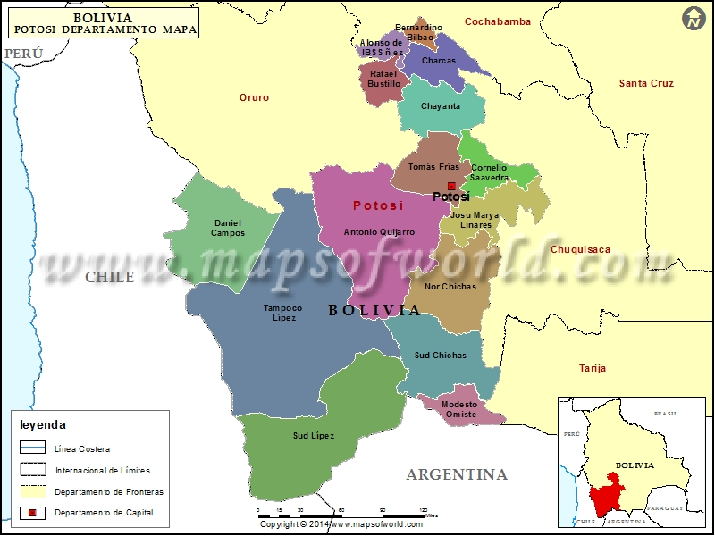

ARTICLE

Potosí es una ciudad en el altiplano del sur de Bolivia. Su larga historia minera se exhibe en el Cerro Rico, una montaña y mina de plata en funcionamiento al sur de la ciudad. La antigua casa de la moneda ubicada en el centro de Potosí, la Casa Nacional de la Moneda, alberga un museo dedicado al arte y la historia de Bolivia. Junto a la casa de la moneda, está la Plaza 10 de Noviembre, una plaza bordeada con edificios coloniales adornados, incluida la catedral.